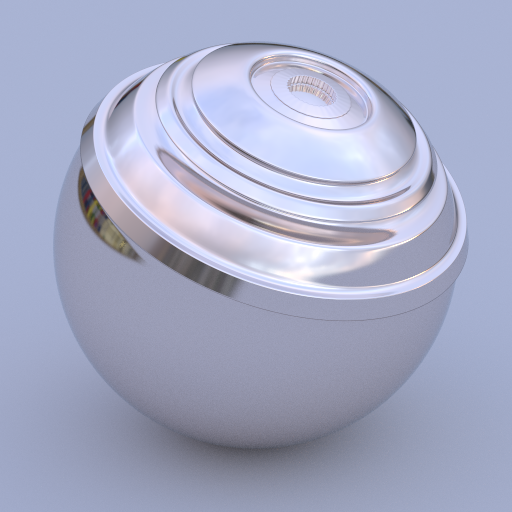
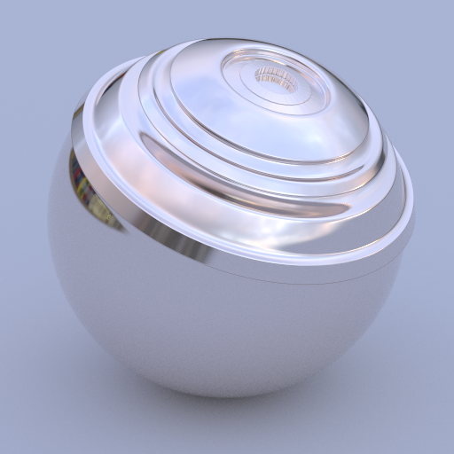
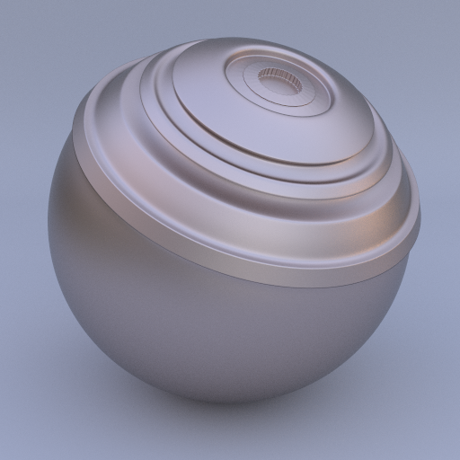
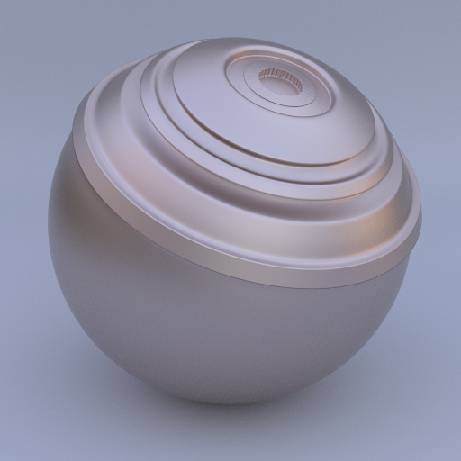
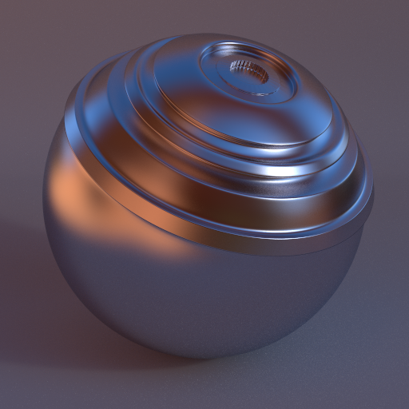
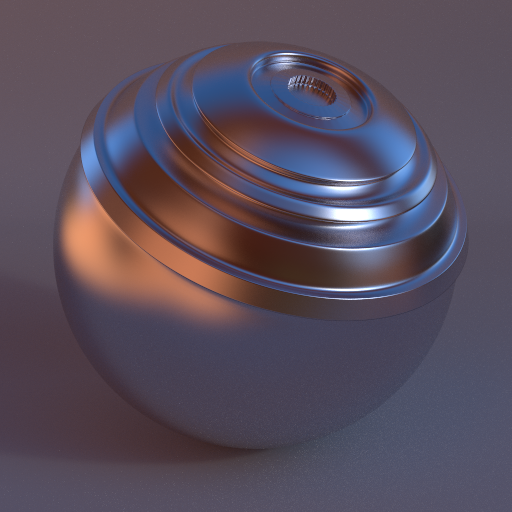

Bringing an Accurate Fresnel to Real-Time Rendering
a Preintegrable Decomposition
Laurent Belcour
Megane Bati
Pascal Barla
Offline / Real-Time Convergence
- Goal: use game engines across productions
- Not just in previz.
- Not just for backgrounds
- Challenge: a unified workflow
- Assets
- ...
- Asset appearance must match
- That includes material models
- All models rely on Fresnel reflectance/transmittance
Production of Love & 50 Megatons
What is Fresnel reflectance?
- Amount of light reflected by a surface
- Basic ingredient of Microfacet models
- Based on the Index of Refraction $\eta + i \kappa$
$ \theta $
$ \theta $
What is Fresnel reflectance?
- Amount of light reflected by a surface
- Basic ingredient of Microfacet models
- Based on the Index of Refraction $\eta + i \kappa$
- A better parameterization exists
- Designed for metals [Gulbrandsen 2014]
$r$
$g$
$g = $ 0.0
$\eta = $ 1.5
$\kappa = $ 0.0
What is Fresnel reflectance?
- Amount of light reflected by a surface
- Basic ingredient of Microfacet models
- Based on the Index of Refraction $\eta + i \kappa$
- A better parameterization exists
- Designed for metals [Gulbrandsen 2014]
- Not linear with respect to edge tint
Gulbrandsen's parameterization, blue to red
What is Fresnel reflectance?
- Amount of light reflected by a surface
- Basic ingredient of Microfacet models
- Based on the Index of Refraction $\eta + i \kappa$
- A better parameterization exists
- Designed for metals [Gulbrandsen 2014]
- Not linear with respect to edge tint
- Approximations exist
- The famous Schlick Fresnel [Schlick 1994] $$ \rho = r + (1 - r)\left( 1 - \cos(\theta) \right)^5 $$
- Not controllable at grazing angles
Another Issue: Lack of Unification
- Multiple "Standards"
- Exact Fresnel with Gulbrandsen's parameterization
- Approximate Fresnel using Schlick
- War of the Fresnels (which to choose?)
- Some with strong opinion [Hoffman 2019]
- My take: this is not my battle
- No cross-compatibility
- Schlick Fresnel is not a valid Fresnel
- Conversion impacts material perception
- Issue: game engines only use Schlick
- Restricts the use of game engines in production
- Let's do something about it!
What is the Constraint of Real Time?
- Precomputed integrals (e.g., Split-Sum Integral [Karis 2013])
$$
L_o = \int_\Omega \rho(\omega_i, \omega_o) L_i(\omega_i) \mbox{d}\omega_i
$$
Too hard to evaluate analytically
What is the Constraint of Real Time?
- Precomputed integrals (e.g., Split-Sum Integral [Karis 2013])
$$
L_o \simeq
\color{green}{ \int_\Omega \rho(\omega_i, \omega_o) \mbox{d}\omega_i }
\times
\color{blue}{ \int_\Omega D(\omega_h) L_i(\omega_i) \mbox{d}\omega_i }
$$
Separate the integral into directional albedo (FGD) and light terms (LD).
What is the Constraint of Real Time?
- Precomputed integrals (e.g., Split-Sum Integral [Karis 2013])
$$
\color{green}{ \int_\Omega \rho(\omega_i, \omega_o) \mbox{d}\omega_i }
$$
FGD Depends on roughness, view direction, reflectivity, and edge tint.
What is the Constraint of Real Time?
- Precomputed integrals (e.g., Split-Sum Integral [Karis 2013])
$$
\color{green}{ \int_\Omega \rho(\omega_i, \omega_o) \mbox{d}\omega_i }
= r \times \quad\quad\quad\quad + \,\, (1-r) \times \, $$
Schlick Fresnel allows us to reduce the dimensionality.
Requirements for a Cross-Production Fresnel
| Schlick | Gulbrandsen | "New model" | |
| Accuracy | ✗ | ✓ | ✓ |
| Real Time | ✓ | ✗ | ✓ |
| Linear parameters | ✓ | ✗ | ✓ |
| Optional edge tint | ✗ | ? | ✓ |
Did You Say Precomputed?
- What does it mean?
- Fresnel is mostly used through a LUT
- So, why bother having an analytical form?
- One constraint though
- Fresnel must be a linear decomposition
- This decomposition is known ahead of rendering
- This was the starting point for our research
An Empirical Fresnel Decomposition
- Extract a Fresnel model from data
- Linear decomposition of Fresnel reflectance $$ F(\theta) \simeq \sum_i w_i b_i(\theta) $$
- What we need is a basis tailored to Fresnel reflectance
- How many basis functions do we need?
- Eigenvalues for dieletrics → 3
An Empirical Fresnel Decomposition
- Extract a Fresnel model from data
- Linear decomposition of Fresnel reflectance $$ F(\theta) = \sum_i w_i b_i(\theta) $$
- What we need is a basis tailored to Fresnel reflectance
- How many basis functions do we need?
- Eigenvalues for dieletrics → 3
- Use the SVD to extract a basis
- But we enforce some constraints
- And use a tailored fitting procedure
Fitting A Fresnel Reflectance
$$
= c_0
$$
$$
+ \, c_1
$$
$$
+\, c_2
$$
$$
+ \, c_3
$$
$$
= r
$$
$$
+ \, {\scriptstyle (1-r)}
$$
$$
+\, c_2
$$
$$
+ \, c_3
$$
Results: Curves
$\eta $ $\kappa $
Results: Comparison with Schlick Fresnel
- Rhodium (Rh)



Results: Comparison with Schlick Fresnel
- Tungsten (W)


Results: Comparison with Schlick Fresnel
- Chromium (Cr)


Where Are We So Far?
| "New model" | |
| Accuracy | ✓ |
| Real Time | ✓ |
| Linear parameters | ? |
| Optional edge tint | ? |
where Are We So Far?
| "New model" | |
| Accuracy | ✓ |
| Real Time | ✓ |
| Linear parameters | ? |
| Optional edge tint | ? |
Building a Parameterization
- We could build a color parameterization
- Use the zero crossing of $b_3(\theta)$
- There the reflectance is determined by $c_2$ only
- Has its drawbacks
- Can break energy conservation (need clamping)
- Can introduce unwanted colours
Building a Parameterization
- Take advantage of $(c_0, c_2)$ space
- Our model is linear with respect to $c_i$
- Any non-linearity will show in this space
- Display the Gulbrandsen parameterization
- Regular grid of $(r,g)$ shows the non-linearity
- Any Fresnel reflectance is constrained to this space
- Find $c_2(r, \beta)$, then $c_3(r, c_2)$
$c_0 = r$
$c_2$
Building a Parameterization
$c_0 = r$
$c_2$
Offline Renders
Gulbrandsen's parameterization, blue to red
Our parameterization, blue to red
Performance
- OpenGL demo
- Running on an Nvidia RTX 2070 at 720p
- 0.02 ms overhead compared to Karis' split-sum integral
Unity Demo
- Editing session
- Implementation by Thomas Deliot
- Custom Forward shader in Unity HDRP
- Running on an Nvidia RTX 2070
where Are We So Far?
| "New model" | |
| Accuracy | ✓ |
| Real Time | ✓ |
| Linear parameters | ✓ |
| Optional edge tint | ? |
No Edge Tint Default
- Many possibilities
- $\beta_o = 0$ is a bad idea
- $\beta_o = \text{argmin}\left(c_2^2 + c_3^2 \right)$ → bad with edge-tint control
- Best solution we found: $\beta_o = 0.75$
- No grazing angle componnent
- Allows back-and-forth edits of r and g
Default using Gulbrandsen (g = 0.75)

Schlick with Equivalent r
$r $ $\beta $
Standardize Fresnel?
- Let's start a community discussion about it!
- Use Fresnel models coherently!
- Replace Schlick by a no edge tint default?
- Add edge tint in a opt-in/out fashion
- An editing format for artists
- Linear edge-tint parameter?
- Artistic $F(X^{\circ})$?
- Your parameterization here?
- An exchange format
- Even share coefficients?
- Compression / conversion / ... should be defined